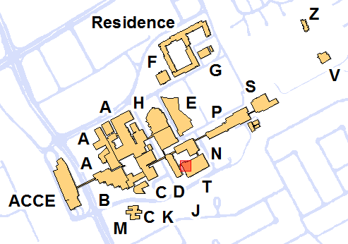

Linux Pi Boot camp
Welcome | How To Get There | Volunteer Info | Download Links
How To Get There
Fullscreen map at https://goo.gl/maps/yTWiY.
Street address:
Algonquin College, Woodroffe Campus
Building T, School of Advanced Technology
1385 Woodroffe Ave
Ottawa, ON K2G 1V8
Please visit the Info Desk located outside Room T119.
Free parking is available during the day on weekends in Lots 8 and 9 and 12. Parking elsewhere requires payment at all times and the parking is patrolled on weekends. Watch for no parking or restricted parking signs.
Public transit (OCTranspo bus service) is available from Baseline Station (just West of the ACCE Building on the map).
A PDF campus map is also available.
Room location image by Algonguin College Room Finder. Satellite maps by Google Maps.